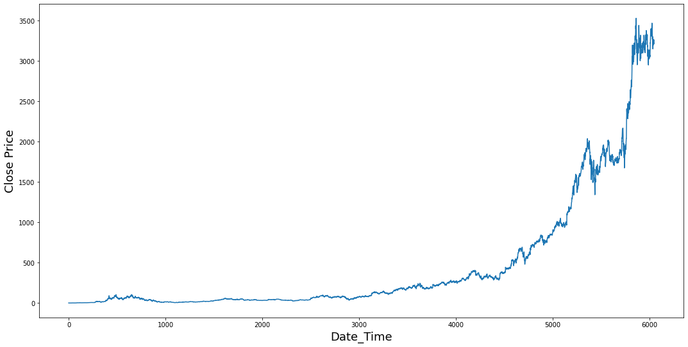
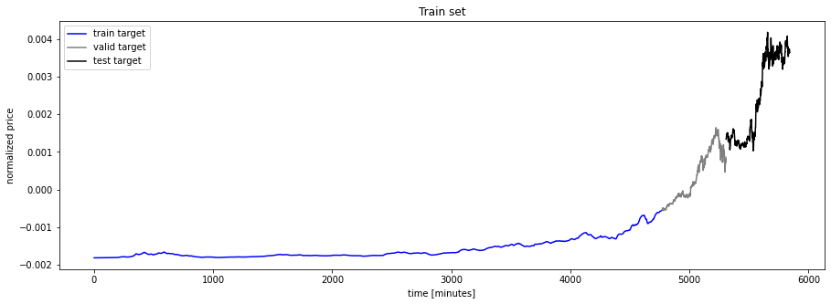

(AMZN): Amazon.com Inc.¶
Transformers¶
import numpy as np
import matplotlib.pyplot as plt
import pandas as pd
import os
from sklearn.preprocessing import MinMaxScaler
import tensorflow as tf
tf.version
---------------------------------------------------------------------------
ModuleNotFoundError Traceback (most recent call last)
<ipython-input-2-5dd07f7bbc6f> in <module>
----> 1 import tensorflow as tf
2 tf.version
ModuleNotFoundError: No module named 'tensorflow'
print("Num GPUs Available: ", len(tf.config.list_physical_devices('GPU')))
---------------------------------------------------------------------------
NameError Traceback (most recent call last)
<ipython-input-3-659b71ab71e1> in <module>
----> 1 print("Num GPUs Available: ", len(tf.config.list_physical_devices('GPU')))
NameError: name 'tf' is not defined
physical_devices = tf.config.list_physical_devices('GPU')
tf.config.experimental.set_memory_growth(physical_devices[0], enable=True)
---------------------------------------------------------------------------
NameError Traceback (most recent call last)
<ipython-input-4-bce91f6a6599> in <module>
----> 1 physical_devices = tf.config.list_physical_devices('GPU')
2 tf.config.experimental.set_memory_growth(physical_devices[0], enable=True)
NameError: name 'tf' is not defined
from collections import deque
import numpy as np
import random
from pandas_datareader.data import DataReader
from datetime import datetime
import time
import random, os, sys
import numpy as np
from tensorflow.keras.models import *
from tensorflow.keras.layers import *
from tensorflow.keras.callbacks import *
from tensorflow.keras.initializers import *
import tensorflow.keras.backend as K
from tensorflow.python.keras.layers import Layer
---------------------------------------------------------------------------
ModuleNotFoundError Traceback (most recent call last)
<ipython-input-5-b09b888b3d66> in <module>
8 import random, os, sys
9 import numpy as np
---> 10 from tensorflow.keras.models import *
11 from tensorflow.keras.layers import *
12 from tensorflow.keras.callbacks import *
ModuleNotFoundError: No module named 'tensorflow'
Classes¶
def split_data(data):
X = []
Y = []
for i in range(SEQ_LEN, len(data)-FUTURE_PERIOD+1):
X.append(data[i-SEQ_LEN:i])
Y.append(data[i+(FUTURE_PERIOD-1), 0])
return np.array(X), np.array(Y)
Get Data¶
item = 'AMZN'
# Get Data
data = DataReader(item, "yahoo", datetime(1900,1,1), datetime.now())
data = pd.DataFrame(data)
data.index.name = 'ds'
data.reset_index(inplace=True)
data = data.dropna()
data = data.rename(columns={'Close' : 'y'})
data = data[["ds","y"]]
data = data.set_index('ds')
data
| y | |
|---|---|
| ds | |
| 1997-05-15 | 1.958333 |
| 1997-05-16 | 1.729167 |
| 1997-05-19 | 1.708333 |
| 1997-05-20 | 1.635417 |
| 1997-05-21 | 1.427083 |
| ... | ... |
| 2021-05-25 | 3259.050049 |
| 2021-05-26 | 3265.159912 |
| 2021-05-27 | 3230.110107 |
| 2021-05-28 | 3223.070068 |
| 2021-06-01 | 3218.649902 |
6051 rows × 1 columns
plt.figure(figsize = (18,9))
plt.plot(range(data.shape[0]),(data['y']))
#plt.xticks(range(0,df.shape[0],500),df['Date'].loc[::500],rotation=45)
plt.xlabel('Date_Time',fontsize=18)
plt.ylabel('Close Price',fontsize=18)
plt.show()

Settings¶
# how long preceding sequence to consider for prediction
SEQ_LEN = 60
# How far into the future we are making prediction(10 min in this case)
FUTURE_PERIOD = 10
RATIO_TO_PREDICT = "y"
Split¶
times = sorted(data.index.values) # get the times
last_10 = sorted(data.index.values)[-int(0.1*len(times))]
last_20 = sorted(data.index.values)[-int(0.2*len(times))]
test_df = data[(data.index >= last_10)]
validation_df = data[(data.index >= last_20) & (data.index < last_10)]
train_df = data[(data.index < last_20)]
Scale and EMA¶
train_ = train_df.values
valid_ = validation_df.values
test_ = test_df.values
scaler = MinMaxScaler()
scale_close = MinMaxScaler()
x = train_[:,0].copy()
scale_close.fit(x.reshape(-1, 1))
MinMaxScaler()
scaler.fit(train_)
train_ = scaler.transform(train_)
valid_ = scaler.transform(valid_)
test_ = scaler.transform(test_)
train_ = scaler.transform(train_)
valid_ = scaler.transform(valid_)
test_ = scaler.transform(test_)
print( train_.shape )
print( valid_.shape )
print( test_.shape )
(4841, 1)
(605, 1)
(605, 1)
EMA = 0.0
gamma = 0.1
for ti in range(len(train_)):
EMA = gamma*train_[ti] + (1-gamma)*EMA
train_[ti] = EMA
train_
array([[-0.00018191],
[-0.00034567],
[-0.00049306],
...,
[-0.00054938],
[-0.00054635],
[-0.00054333]])
# Used for visualization and test purposes
all_mid_data = np.concatenate([train_,valid_, test_],axis=0)
all_mid_data
array([[-0.00018191],
[-0.00034567],
[-0.00049306],
...,
[ 0.00366948],
[ 0.00365751],
[ 0.00364999]])
Split¶
X_train, y_train = split_data(train_)
X_test, y_test = split_data(test_)
X_valid, y_valid = split_data(valid_)
X_train = np.reshape(X_train, (X_train.shape[0], X_train.shape[1], 1))
X_valid = np.reshape(X_valid, (X_valid.shape[0], X_valid.shape[1], 1))
X_test = np.reshape(X_test, (X_test.shape[0], X_test.shape[1], 1))
print("train shape {0}".format(X_train.shape))
print("valid shape {0}".format(X_valid.shape))
print("test shape {0}".format(X_test.shape))
train shape (4772, 60, 1)
valid shape (536, 60, 1)
test shape (536, 60, 1)
X_train_2, y_train_2 = split_data(train_)
X_train_2 = np.reshape(X_train_2, (X_train_2.shape[0], X_train_2.shape[1], 1))
## show predictions
plt.figure(figsize=(15, 5))
plt.plot(np.arange(y_train_2.shape[0]), y_train_2, color='blue', label='train target')
plt.plot(np.arange(y_train_2.shape[0], y_train_2.shape[0]+y_valid.shape[0]), y_valid,
color='gray', label='valid target')
plt.plot(np.arange(y_train_2.shape[0]+y_valid.shape[0],
y_train_2.shape[0]+y_valid.shape[0]+y_test.shape[0]),
y_test, color='black', label='test target')
plt.title('Train set')
plt.xlabel('time [minutes]')
plt.ylabel('normalized price')
plt.legend(loc='best');

Classes¶
def classify(current, future):
if float(future) > float(current):
return 1
else:
return 0
class LayerNormalization(Layer):
def __init__(self, eps=1e-6, **kwargs):
self.eps = eps
super(LayerNormalization, self).__init__(**kwargs)
def build(self, input_shape):
self.gamma = self.add_weight(name='gamma', shape=input_shape[-1:],
initializer=Ones(), trainable=True)
self.beta = self.add_weight(name='beta', shape=input_shape[-1:],
initializer=Zeros(), trainable=True)
super(LayerNormalization, self).build(input_shape)
def call(self, x):
mean = K.mean(x, axis=-1, keepdims=True)
std = K.std(x, axis=-1, keepdims=True)
return self.gamma * (x - mean) / (std + self.eps) + self.beta
def compute_output_shape(self, input_shape):
return input_shape
---------------------------------------------------------------------------
NameError Traceback (most recent call last)
<ipython-input-26-54262c8b1874> in <module>
----> 1 class LayerNormalization(Layer):
2 def __init__(self, eps=1e-6, **kwargs):
3 self.eps = eps
4 super(LayerNormalization, self).__init__(**kwargs)
5 def build(self, input_shape):
NameError: name 'Layer' is not defined
class ScaledDotProductAttention():
def __init__(self, d_model, attn_dropout=0.1):
self.temper = np.sqrt(d_model)
self.dropout = Dropout(attn_dropout)
def __call__(self, q, k, v, mask):
attn = Lambda(lambda x:K.batch_dot(x[0],x[1],axes=[2,2])/self.temper)([q, k])
if mask is not None:
mmask = Lambda(lambda x:(-1e+10)*(1-x))(mask)
attn = Add()([attn, mmask])
attn = Activation('softmax')(attn)
attn = self.dropout(attn)
output = Lambda(lambda x:K.batch_dot(x[0], x[1]))([attn, v])
return output, attn
class MultiHeadAttention():
# mode 0 - big martixes, faster; mode 1 - more clear implementation
def __init__(self, n_head, d_model, d_k, d_v, dropout, mode=0, use_norm=True):
self.mode = mode
self.n_head = n_head
self.d_k = d_k
self.d_v = d_v
self.dropout = dropout
if mode == 0:
self.qs_layer = Dense(n_head*d_k, use_bias=False)
self.ks_layer = Dense(n_head*d_k, use_bias=False)
self.vs_layer = Dense(n_head*d_v, use_bias=False)
elif mode == 1:
self.qs_layers = []
self.ks_layers = []
self.vs_layers = []
for _ in range(n_head):
self.qs_layers.append(TimeDistributed(Dense(d_k, use_bias=False)))
self.ks_layers.append(TimeDistributed(Dense(d_k, use_bias=False)))
self.vs_layers.append(TimeDistributed(Dense(d_v, use_bias=False)))
self.attention = ScaledDotProductAttention(d_model)
self.layer_norm = LayerNormalization() if use_norm else None
self.w_o = TimeDistributed(Dense(d_model))
def __call__(self, q, k, v, mask=None):
d_k, d_v = self.d_k, self.d_v
n_head = self.n_head
if self.mode == 0:
qs = self.qs_layer(q) # [batch_size, len_q, n_head*d_k]
ks = self.ks_layer(k)
vs = self.vs_layer(v)
def reshape1(x):
s = tf.shape(x) # [batch_size, len_q, n_head * d_k]
x = tf.reshape(x, [s[0], s[1], n_head, d_k])
x = tf.transpose(x, [2, 0, 1, 3])
x = tf.reshape(x, [-1, s[1], d_k]) # [n_head * batch_size, len_q, d_k]
return x
qs = Lambda(reshape1)(qs)
ks = Lambda(reshape1)(ks)
vs = Lambda(reshape1)(vs)
if mask is not None:
mask = Lambda(lambda x:K.repeat_elements(x, n_head, 0))(mask)
head, attn = self.attention(qs, ks, vs, mask=mask)
def reshape2(x):
s = tf.shape(x) # [n_head * batch_size, len_v, d_v]
x = tf.reshape(x, [n_head, -1, s[1], s[2]])
x = tf.transpose(x, [1, 2, 0, 3])
x = tf.reshape(x, [-1, s[1], n_head*d_v]) # [batch_size, len_v, n_head * d_v]
return x
head = Lambda(reshape2)(head)
elif self.mode == 1:
heads = []; attns = []
for i in range(n_head):
qs = self.qs_layers[i](q)
ks = self.ks_layers[i](k)
vs = self.vs_layers[i](v)
head, attn = self.attention(qs, ks, vs, mask)
heads.append(head); attns.append(attn)
head = Concatenate()(heads) if n_head > 1 else heads[0]
attn = Concatenate()(attns) if n_head > 1 else attns[0]
outputs = self.w_o(head)
outputs = Dropout(self.dropout)(outputs)
if not self.layer_norm: return outputs, attn
# outputs = Add()([outputs, q]) # sl: fix
return self.layer_norm(outputs), attn
class PositionwiseFeedForward():
def __init__(self, d_hid, d_inner_hid, dropout=0.1):
self.w_1 = Conv1D(d_inner_hid, 1, activation='relu')
self.w_2 = Conv1D(d_hid, 1)
self.layer_norm = LayerNormalization()
self.dropout = Dropout(dropout)
def __call__(self, x):
output = self.w_1(x)
output = self.w_2(output)
output = self.dropout(output)
output = Add()([output, x])
return self.layer_norm(output)
class EncoderLayer():
def __init__(self, d_model, d_inner_hid, n_head, d_k, d_v, dropout=0.1):
self.self_att_layer = MultiHeadAttention(n_head, d_model, d_k, d_v, dropout=dropout)
self.pos_ffn_layer = PositionwiseFeedForward(d_model, d_inner_hid, dropout=dropout)
def __call__(self, enc_input, mask=None):
output, slf_attn = self.self_att_layer(enc_input, enc_input, enc_input, mask=mask)
output = self.pos_ffn_layer(output)
return output, slf_attn
def GetPosEncodingMatrix(max_len, d_emb):
pos_enc = np.array([
[pos / np.power(10000, 2 * (j // 2) / d_emb) for j in range(d_emb)]
if pos != 0 else np.zeros(d_emb)
for pos in range(max_len)
])
pos_enc[1:, 0::2] = np.sin(pos_enc[1:, 0::2]) # dim 2i
pos_enc[1:, 1::2] = np.cos(pos_enc[1:, 1::2]) # dim 2i+1
return pos_enc
def GetPadMask(q, k):
ones = K.expand_dims(K.ones_like(q, 'float32'), -1)
mask = K.cast(K.expand_dims(K.not_equal(k, 0), 1), 'float32')
mask = K.batch_dot(ones, mask, axes=[2,1])
return mask
def GetSubMask(s):
len_s = tf.shape(s)[1]
bs = tf.shape(s)[:1]
mask = K.cumsum(tf.eye(len_s, batch_shape=bs), 1)
return mask
class CustomeLearningSchedule(tf.keras.optimizers.schedules.LearningRateSchedule):
def __init__(self, d_model, warmup_steps=4000):
super(CustomeLearningSchedule, self).__init__()
self.d_model = tf.cast(d_model, tf.float32)
self.warmup_steps = warmup_steps
def __call__(self, step):
param_1 = tf.math.rsqrt(step)
param_2 = step * (self.warmup_steps**(-1.5))
return tf.math.rsqrt(self.d_model) * tf.math.minimum(param_1, param_2)
---------------------------------------------------------------------------
NameError Traceback (most recent call last)
<ipython-input-34-b8a52ab15322> in <module>
----> 1 class CustomeLearningSchedule(tf.keras.optimizers.schedules.LearningRateSchedule):
2 def __init__(self, d_model, warmup_steps=4000):
3 super(CustomeLearningSchedule, self).__init__()
4 self.d_model = tf.cast(d_model, tf.float32)
5 self.warmup_steps = warmup_steps
NameError: name 'tf' is not defined
Modelling¶
sample_learning_rate = CustomeLearningSchedule(d_model=128)
plt.plot(sample_learning_rate(tf.range(200000, dtype=tf.float32)))
plt.ylabel("Learning Rate")
plt.xlabel("Train Step")
---------------------------------------------------------------------------
NameError Traceback (most recent call last)
<ipython-input-35-5b4a8ff86da4> in <module>
----> 1 sample_learning_rate = CustomeLearningSchedule(d_model=128)
2
3 plt.plot(sample_learning_rate(tf.range(200000, dtype=tf.float32)))
4 plt.ylabel("Learning Rate")
5 plt.xlabel("Train Step")
NameError: name 'CustomeLearningSchedule' is not defined
EPOCHS = 10
BATCH_SIZE = 30
D_MODEL=300
lr = CustomeLearningSchedule(D_MODEL)
optimizer = tf.keras.optimizers.Adam(learning_rate=lr,
beta_1=0.9,
beta_2=0.98,
epsilon=1e-9)
---------------------------------------------------------------------------
NameError Traceback (most recent call last)
<ipython-input-36-c46722f8ceae> in <module>
4 D_MODEL=300
5
----> 6 lr = CustomeLearningSchedule(D_MODEL)
7
8 optimizer = tf.keras.optimizers.Adam(learning_rate=lr,
NameError: name 'CustomeLearningSchedule' is not defined
def build_model():
inp = Input(shape = (SEQ_LEN, 1))
#x = Bidirectional(LSTM(128, return_sequences=True))(inp)
#x = Bidirectional(LSTM(64, return_sequences=True))(x)
x = Bidirectional(LSTM(64, return_sequences=True))(inp)
x = Bidirectional(LSTM(64, return_sequences=True))(x)
#for i in range(2):
x, self_attn = EncoderLayer(
d_model=D_MODEL,
d_inner_hid=512,
n_head=4,
d_k=64,
d_v=64,
dropout=0.1)(x)
avg_pool = GlobalAveragePooling1D()(x)
max_pool = GlobalMaxPooling1D()(x)
conc = concatenate([avg_pool, max_pool])
conc = Dense(64, activation="relu")(conc)
x = Dense(1, activation="sigmoid")(conc)
model = Model(inputs = inp, outputs = x)
model.compile(
loss = "mean_squared_error",
optimizer = optimizer)
return model
multi_head = build_model()
multi_head.summary()
---------------------------------------------------------------------------
NameError Traceback (most recent call last)
<ipython-input-38-3ac7ebf451fa> in <module>
----> 1 multi_head = build_model()
2 multi_head.summary()
<ipython-input-37-69026575efba> in build_model()
1 def build_model():
----> 2 inp = Input(shape = (SEQ_LEN, 1))
3
4 #x = Bidirectional(LSTM(128, return_sequences=True))(inp)
5 #x = Bidirectional(LSTM(64, return_sequences=True))(x)
NameError: name 'Input' is not defined
Fit¶
callback = EarlyStopping(monitor='val_loss',
patience=3,
restore_best_weights=True)
---------------------------------------------------------------------------
NameError Traceback (most recent call last)
<ipython-input-39-b2c8ef5f5f6f> in <module>
----> 1 callback = EarlyStopping(monitor='val_loss',
2 patience=3,
3 restore_best_weights=True)
NameError: name 'EarlyStopping' is not defined
history = multi_head.fit(x=X_train,
y=y_train,
batch_size=BATCH_SIZE,
epochs=EPOCHS,
validation_data=(X_valid, y_valid),
callbacks=[callback])
---------------------------------------------------------------------------
NameError Traceback (most recent call last)
<ipython-input-40-6a10a7fecddc> in <module>
----> 1 history = multi_head.fit(x=X_train,
2 y=y_train,
3 batch_size=BATCH_SIZE,
4 epochs=EPOCHS,
5 validation_data=(X_valid, y_valid),
NameError: name 'multi_head' is not defined